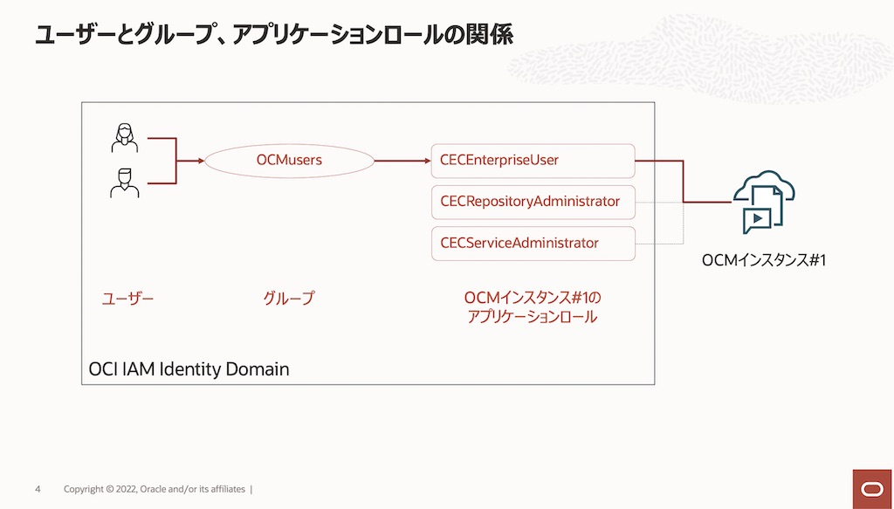
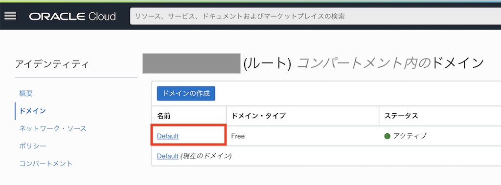
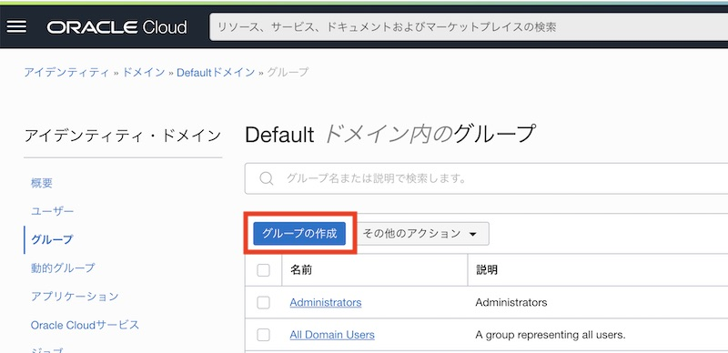
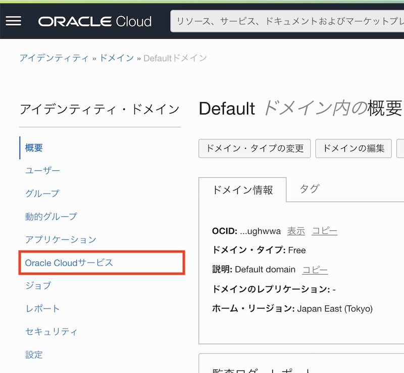
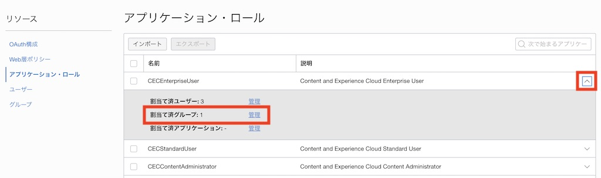
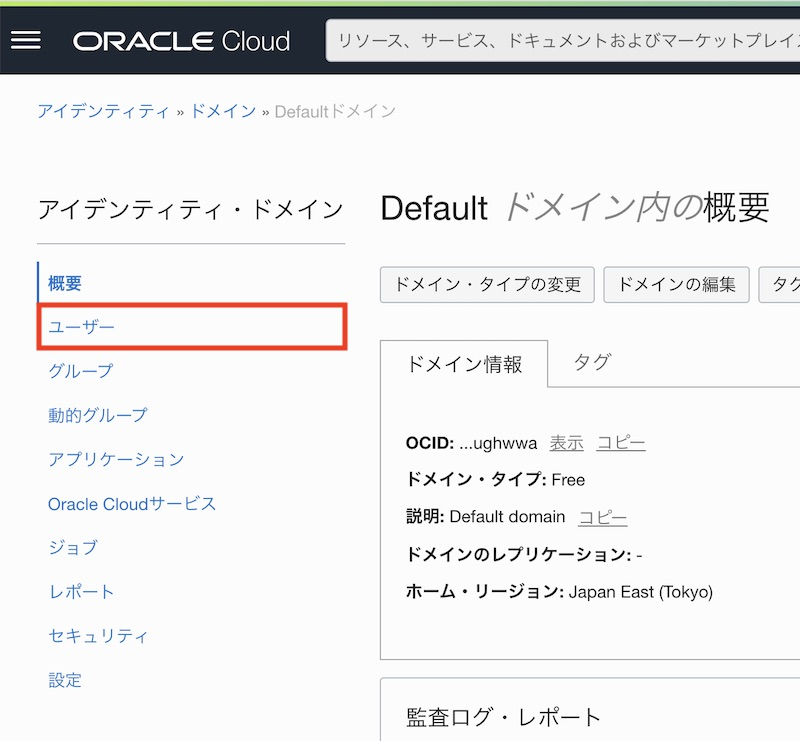

この文書は OCI IAM Identity Domain環境 でOracle Content Management (OCM) を利用するユーザーを作成する方法をステップ・バイ・ステップで紹介するチュートリアルです。
なお、IDCS環境でユーザーを作成する場合は、Oracle Content Management インスタンスの利用ユーザーを作成するをご参照ください。
【お知らせ】
この文書は、2022年7月時点での最新バージョン(22.7.2)を元に作成されてます。
チュートリアル内の画面ショットについては、現在のコンソール画面と異なっている場合があります。
前提条件
1. ユーザーとグループの作成
OCM インスタンスを利用するユーザーは、ODI IAM Identity Domainのユーザー として登録します。ここでは、ドメイン内に作成したユーザーにグループを利用し、OCM インスタンスのアプリケーションロール(CECEnterpriseUser)を割り当てる手順を説明します

グループは、組織内の役割にあわせて作成します。下記マニュアルを参考に作成します。
-
Administrating Oracle Content Management
-
一般的な組織ロール（日本語翻訳版）
1.1 グループの作成
グループを作成します。ここでは Default ドメイン内に OCMusers グループを作成します
-
OCIコンソールの左上のメニューをクリックし、アイデンティティとセキュリティ→アイデンティティ→ドメイン をクリックします

-
Default ドメインをクリックします

-
左ナビゲーションの 「グループ」 をクリックします

-
「グループの作成」 をクリックします

-
「名前」 と 「説明」 を入力し、「作成」 をクリックします（ここでは OCMusers を作成）

-
グループの作成が完了しました
1.2 グループを OCM インスタンスのアプリケーションロールに割り当て
前の手順で作成したグループを、OCMインスタンスのアプリケーションロールに割り当てます。ここでは CECEnterpriseUser を割り当てます。
CECEnterpriseUser ロールで利用できる機能については、以下のマニュアルの Enterprise User をご確認ください
グループ単位でアプリケーションロールを割り当てることで、ユーザーの追加/削除/割り当て権限の変更を簡単にします
-
Default ドメインの 「Oracle Cloudサービス」 をクリックします

-
検索窓に 「CECS」 と入力し、検索を実行します。作成したOCMインスタンスの名前を含むアプリケーションをクリックします

[TIPS]
OCMインスタンス作成時、「Oracle Cloudサービス」に CECSAUTO_<OCMインスタンス名>CECSAUTO のアプリケーションが自動的に作成されます
例）OCMインスタンス名が ocminstance1 の場合は、CECSAUTO_ocminstance1CECSAUTO となります -
左メニューの「リソース」→ 「アプリケーション・ロール」 をクリックします

-
CECEnterpriseUser のメニューを開き、「割当て済グループ」→「管理」 をクリックします

-
「＋ 使用可能なグループの表示」 をクリックします

-
アプリケーションロールに割り当てるグループ（ここでは OCMusers）を選択し、「割当て」 をクリックします

-
割当て済グループに追加されたことを確認し、「閉じる」 をクリックします

1.3 ユーザーの作成
ユーザーを作成します。ユーザー作成時にグループの割り当ても同時に実施します。これにより、新規ユーザーは、登録直後から OCM インスタンスの利用が可能になります
-
Default ドメインの 「ユーザー」 をクリックします

-
「ユーザーの作成」 をクリックします

-
追加するユーザーの 「名」「姓」「ユーザー名/電子メール」 を入力します。つづけて、OCMusers グループを選択し、「作成」 をクリックします

-
新規ユーザーの作成が完了します。作成ユーザーに対してメールが送信されます。アカウントアクティベーションを実施し、OCM インスタンスにサインインします
1.4 [説明]ユーザー作成時の通知メールについて
OCMインスタンスを利用できるユーザーを作成すると、2通 のメールが送信されます
-
アカウント・アクティベーションのメール（英語）
- ユーザーのアクティベーション（パスワード登録）を実行します
-
ユーザーのアクティベーションには 有効期限 があります。メールを受信したら、有効期限内にアクティベーションを実行してください

-
OCMインスタンスの URL などを含む welcome メール
- ユーザー名や OCM インスタンスへのURL、操作方法の紹介動画へのリンクなどが掲載されます
-
このメールは、OCMインスタンスの利用を終了するまで保存しておきましょう

以上でこのチュートリアルは終了です。